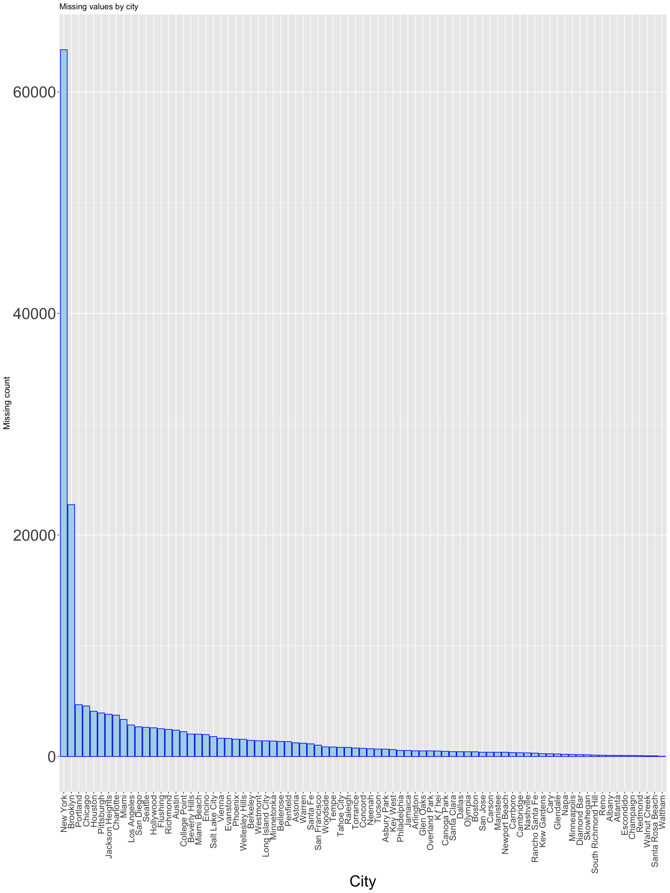

Chapter 4 Missing values

## descriptions.dateSeen descriptions.sourceURLs descriptions.value
## 10000 10000 10000
## features.key features.value hours.day
## 10000 10000 10000
## hours.dept hours.hour languagesSpoken
## 10000 10000 10000
## isClosed yearOpened sic
## 9963 9909 9860
## claimed facebookPageURL twitter
## 9311 9063 8042
## paymentTypes menus.description imageURLs
## 6127 6013 4866
## menus.category priceRangeCurrency priceRangeMin
## 4070 3673 3673
## priceRangeMax websites menus.currency
## 3673 1817 53
## id dateAdded dateUpdated
## 0 0 0
## address categories primaryCategories
## 0 0 0
## city country cuisines
## 0 0 0
## keys latitude longitude
## 0 0 0
## menuPageURL menus.amountMax menus.amountMin
## 0 0 0
## menus.dateSeen menus.name menus.sourceURLs
## 0 0 0
## name phones postalCode
## 0 0 0
## province sourceURLs
## 0 0## NOTE: In the following pairs of variables, the missingness pattern of the second is a subset of the first.
## Please verify whether they are in fact logically distinct variables.
## [,1] [,2]
## [1,] "claimed" "imageURLs"
## [2,] "claimed" "menus.currency"
## [3,] "claimed" "websites"
## [4,] "descriptions.dateSeen" "facebookPageURL"
## [5,] "descriptions.dateSeen" "imageURLs"
## [6,] "descriptions.dateSeen" "isClosed"
## [7,] "descriptions.dateSeen" "menus.category"
## [8,] "descriptions.dateSeen" "menus.currency"
## [9,] "descriptions.dateSeen" "menus.description"
## [10,] "descriptions.dateSeen" "paymentTypes"
## [11,] "descriptions.dateSeen" "priceRangeCurrency"
## [12,] "descriptions.dateSeen" "priceRangeMin"
## [13,] "descriptions.dateSeen" "priceRangeMax"
## [14,] "descriptions.dateSeen" "sic"
## [15,] "descriptions.dateSeen" "twitter"
## [16,] "descriptions.dateSeen" "websites"
## [17,] "descriptions.dateSeen" "yearOpened"
## [18,] "descriptions.sourceURLs" "facebookPageURL"
## [19,] "descriptions.sourceURLs" "imageURLs"
## [20,] "descriptions.sourceURLs" "isClosed"
## [21,] "descriptions.sourceURLs" "menus.category"
## [22,] "descriptions.sourceURLs" "menus.currency"
## [23,] "descriptions.sourceURLs" "menus.description"
## [24,] "descriptions.sourceURLs" "paymentTypes"
## [25,] "descriptions.sourceURLs" "priceRangeCurrency"
## [26,] "descriptions.sourceURLs" "priceRangeMin"
## [27,] "descriptions.sourceURLs" "priceRangeMax"
## [28,] "descriptions.sourceURLs" "sic"
## [29,] "descriptions.sourceURLs" "twitter"
## [30,] "descriptions.sourceURLs" "websites"
## [31,] "descriptions.sourceURLs" "yearOpened"
## [32,] "descriptions.value" "facebookPageURL"
## [33,] "descriptions.value" "imageURLs"
## [34,] "descriptions.value" "isClosed"
## [35,] "descriptions.value" "menus.category"
## [36,] "descriptions.value" "menus.currency"
## [37,] "descriptions.value" "menus.description"
## [38,] "descriptions.value" "paymentTypes"
## [39,] "descriptions.value" "priceRangeCurrency"
## [40,] "descriptions.value" "priceRangeMin"
## [41,] "descriptions.value" "priceRangeMax"
## [42,] "descriptions.value" "sic"
## [43,] "descriptions.value" "twitter"
## [44,] "descriptions.value" "websites"
## [45,] "descriptions.value" "yearOpened"
## [46,] "facebookPageURL" "paymentTypes"
## [47,] "facebookPageURL" "priceRangeCurrency"
## [48,] "facebookPageURL" "priceRangeMin"
## [49,] "facebookPageURL" "priceRangeMax"
## [50,] "facebookPageURL" "websites"
## [51,] "features.key" "imageURLs"
## [52,] "features.key" "isClosed"
## [53,] "features.key" "menus.category"
## [54,] "features.key" "menus.currency"
## [55,] "features.key" "menus.description"
## [56,] "features.key" "paymentTypes"
## [57,] "features.key" "priceRangeCurrency"
## [58,] "features.key" "priceRangeMin"
## [59,] "features.key" "priceRangeMax"
## [60,] "features.key" "sic"
## [61,] "features.key" "twitter"
## [62,] "features.key" "websites"
## [63,] "features.key" "yearOpened"
## [64,] "features.value" "imageURLs"
## [65,] "features.value" "isClosed"
## [66,] "features.value" "menus.category"
## [67,] "features.value" "menus.currency"
## [68,] "features.value" "menus.description"
## [69,] "features.value" "paymentTypes"
## [70,] "features.value" "priceRangeCurrency"
## [71,] "features.value" "priceRangeMin"
## [72,] "features.value" "priceRangeMax"
## [73,] "features.value" "sic"
## [74,] "features.value" "twitter"
## [75,] "features.value" "websites"
## [76,] "features.value" "yearOpened"
## [77,] "hours.day" "imageURLs"
## [78,] "hours.day" "isClosed"
## [79,] "hours.day" "menus.category"
## [80,] "hours.day" "menus.currency"
## [81,] "hours.day" "menus.description"
## [82,] "hours.day" "paymentTypes"
## [83,] "hours.day" "priceRangeCurrency"
## [84,] "hours.day" "priceRangeMin"
## [85,] "hours.day" "priceRangeMax"
## [86,] "hours.day" "sic"
## [87,] "hours.day" "twitter"
## [88,] "hours.day" "websites"
## [89,] "hours.day" "yearOpened"
## [90,] "hours.dept" "imageURLs"
## [91,] "hours.dept" "isClosed"
## [92,] "hours.dept" "menus.category"
## [93,] "hours.dept" "menus.currency"
## [94,] "hours.dept" "menus.description"
## [95,] "hours.dept" "paymentTypes"
## [96,] "hours.dept" "priceRangeCurrency"
## [97,] "hours.dept" "priceRangeMin"
## [98,] "hours.dept" "priceRangeMax"
## [99,] "hours.dept" "sic"
## [100,] "hours.dept" "twitter"
## [101,] "hours.dept" "websites"
## [102,] "hours.dept" "yearOpened"
## [103,] "hours.hour" "imageURLs"
## [104,] "hours.hour" "isClosed"
## [105,] "hours.hour" "menus.category"
## [106,] "hours.hour" "menus.currency"
## [107,] "hours.hour" "menus.description"
## [108,] "hours.hour" "paymentTypes"
## [109,] "hours.hour" "priceRangeCurrency"
## [110,] "hours.hour" "priceRangeMin"
## [111,] "hours.hour" "priceRangeMax"
## [112,] "hours.hour" "sic"
## [113,] "hours.hour" "twitter"
## [114,] "hours.hour" "websites"
## [115,] "hours.hour" "yearOpened"
## [116,] "isClosed" "menus.currency"
## [117,] "isClosed" "websites"
## [118,] "languagesSpoken" "menus.category"
## [119,] "languagesSpoken" "menus.currency"
## [120,] "languagesSpoken" "menus.description"
## [121,] "languagesSpoken" "paymentTypes"
## [122,] "languagesSpoken" "priceRangeCurrency"
## [123,] "languagesSpoken" "priceRangeMin"
## [124,] "languagesSpoken" "priceRangeMax"
## [125,] "languagesSpoken" "sic"
## [126,] "languagesSpoken" "twitter"
## [127,] "languagesSpoken" "websites"
## [128,] "languagesSpoken" "yearOpened"
## [129,] "menus.category" "menus.currency"
## [130,] "twitter" "websites"## claimed, isClosed
## 4
## isClosed, sic, twitter
## 20
## claimed, isClosed, sic
## 42
## facebookPageURL, isClosed, sic
## 3
## claimed, isClosed, menus.category
## 4
## claimed, isClosed, menus.description
## 2
## claimed, imageURLs, isClosed, sic
## 59
## claimed, facebookPageURL, isClosed, sic
## 166
## facebookPageURL, isClosed, sic, twitter
## 80
## claimed, facebookPageURL, isClosed, paymentTypes
## 6
## claimed, isClosed, menus.category, sic
## 91
## claimed, isClosed, menus.description, sic
## 79
## facebookPageURL, isClosed, menus.description, sic
## 36
## claimed, isClosed, menus.category, menus.description
## 12
## claimed, facebookPageURL, isClosed, sic, twitter
## 327
## facebookPageURL, isClosed, paymentTypes, sic, twitter
## 77
## claimed, facebookPageURL, isClosed, paymentTypes, sic
## 144
## claimed, facebookPageURL, isClosed, menus.description, sic
## 105
## facebookPageURL, isClosed, menus.description, sic, twitter
## 53
## claimed, imageURLs, isClosed, sic, twitter
## 120
## claimed, facebookPageURL, isClosed, menus.category, sic
## 39
## claimed, facebookPageURL, imageURLs, isClosed, sic
## 11
## claimed, facebookPageURL, isClosed, menus.description, paymentTypes
## 1
## claimed, isClosed, menus.category, menus.description, sic
## 464
## facebookPageURL, isClosed, menus.category, sic, twitter
## 3
## claimed, facebookPageURL, isClosed, menus.description, sic, twitter
## 190
## facebookPageURL, isClosed, menus.description, paymentTypes, sic, twitter
## 127
## claimed, facebookPageURL, isClosed, paymentTypes, sic, twitter
## 303
## claimed, facebookPageURL, imageURLs, isClosed, paymentTypes, twitter
## 17
## claimed, facebookPageURL, imageURLs, isClosed, sic, twitter
## 129
## claimed, facebookPageURL, isClosed, menus.description, paymentTypes, sic
## 37
## claimed, facebookPageURL, isClosed, menus.category, paymentTypes, sic
## 15
## facebookPageURL, isClosed, priceRangeMin, priceRangeMax, sic, twitter
## 31
## claimed, imageURLs, isClosed, menus.description, sic, twitter
## 38
## claimed, facebookPageURL, isClosed, menus.category, menus.description, sic
## 206
## claimed, facebookPageURL, imageURLs, isClosed, menus.description, sic
## 6
## claimed, facebookPageURL, isClosed, menus.category, menus.description, paymentTypes
## 8
## facebookPageURL, isClosed, menus.category, menus.description, sic, twitter
## 53
## facebookPageURL, isClosed, menus.category, menus.description, paymentTypes, sic, twitter
## 164
## claimed, facebookPageURL, isClosed, menus.category, menus.description, paymentTypes, sic
## 391
## claimed, facebookPageURL, isClosed, menus.category, menus.description, sic, twitter
## 547
## claimed, facebookPageURL, imageURLs, isClosed, paymentTypes, sic, twitter
## 287
## claimed, facebookPageURL, imageURLs, isClosed, paymentTypes, twitter, websites
## 22
## claimed, facebookPageURL, imageURLs, isClosed, menus.description, paymentTypes, twitter
## 3
## claimed, facebookPageURL, isClosed, priceRangeMin, priceRangeMax, sic, twitter
## 99
## claimed, facebookPageURL, isClosed, menus.description, paymentTypes, sic, twitter
## 220
## claimed, facebookPageURL, imageURLs, isClosed, menus.category, sic, twitter
## 20
## facebookPageURL, isClosed, menus.description, priceRangeMin, priceRangeMax, sic, twitter
## 19
## claimed, facebookPageURL, isClosed, menus.category, paymentTypes, sic, twitter
## 18
## claimed, facebookPageURL, imageURLs, isClosed, menus.description, sic, twitter
## 15
## claimed, imageURLs, isClosed, menus.category, menus.description, sic, twitter
## 2
## claimed, facebookPageURL, imageURLs, isClosed, priceRangeMin, priceRangeMax, twitter
## 9
## claimed, facebookPageURL, imageURLs, isClosed, menus.category, menus.description, sic
## 9
## claimed, facebookPageURL, isClosed, menus.category, priceRangeMin, priceRangeMax, sic
## 2
## claimed, facebookPageURL, imageURLs, isClosed, priceRangeMin, priceRangeMax, sic, twitter
## 123
## claimed, facebookPageURL, imageURLs, isClosed, menus.description, paymentTypes, sic, twitter
## 164
## claimed, facebookPageURL, imageURLs, isClosed, paymentTypes, sic, twitter, websites
## 56
## claimed, facebookPageURL, imageURLs, isClosed, menus.category, menus.description, sic, twitter
## 161
## claimed, facebookPageURL, isClosed, paymentTypes, priceRangeMin, priceRangeMax, sic, twitter
## 245
## facebookPageURL, isClosed, menus.category, menus.description, priceRangeMin, priceRangeMax, sic, twitter
## 23
## claimed, facebookPageURL, isClosed, menus.description, priceRangeMin, priceRangeMax, sic, twitter
## 75
## claimed, facebookPageURL, isClosed, menus.category, menus.description, paymentTypes, sic, twitter
## 383
## claimed, facebookPageURL, imageURLs, isClosed, menus.description, priceRangeMin, priceRangeMax, twitter
## 6
## claimed, facebookPageURL, isClosed, priceRangeMin, priceRangeMax, sic, twitter, websites
## 10
## claimed, facebookPageURL, imageURLs, paymentTypes, priceRangeMin, priceRangeMax, sic, twitter
## 17
## claimed, facebookPageURL, imageURLs, menus.description, paymentTypes, priceRangeMin, priceRangeMax, twitter
## 16
## claimed, facebookPageURL, isClosed, menus.category, menus.description, priceRangeMin, priceRangeMax, sic
## 16
## claimed, facebookPageURL, isClosed, menus.category, priceRangeMin, priceRangeMax, sic, twitter
## 3
## claimed, facebookPageURL, imageURLs, isClosed, menus.category, paymentTypes, sic, twitter
## 19
## claimed, facebookPageURL, isClosed, menus.category, paymentTypes, priceRangeMin, priceRangeMax, sic, twitter
## 8
## claimed, facebookPageURL, imageURLs, isClosed, paymentTypes, priceRangeMin, priceRangeMax, sic, twitter
## 440
## claimed, facebookPageURL, imageURLs, isClosed, menus.description, priceRangeMin, priceRangeMax, sic, twitter
## 92
## claimed, facebookPageURL, imageURLs, isClosed, menus.category, menus.description, paymentTypes, sic, twitter
## 748
## claimed, facebookPageURL, isClosed, paymentTypes, priceRangeMin, priceRangeMax, sic, twitter, websites
## 1
## claimed, facebookPageURL, isClosed, menus.description, paymentTypes, priceRangeMin, priceRangeMax, sic, twitter
## 111
## claimed, facebookPageURL, imageURLs, isClosed, paymentTypes, priceRangeMin, priceRangeMax, twitter, websites
## 12
## claimed, facebookPageURL, imageURLs, isClosed, menus.description, paymentTypes, sic, twitter, websites
## 3
## claimed, facebookPageURL, imageURLs, isClosed, priceRangeMin, priceRangeMax, sic, twitter, websites
## 112
## claimed, facebookPageURL, imageURLs, menus.category, menus.description, paymentTypes, priceRangeMin, priceRangeMax, twitter
## 4
## claimed, facebookPageURL, imageURLs, isClosed, menus.category, priceRangeMin, priceRangeMax, sic, twitter
## 5
## claimed, facebookPageURL, isClosed, menus.category, menus.description, priceRangeMin, priceRangeMax, sic, twitter
## 5
## claimed, facebookPageURL, isClosed, menus.category, menus.description, paymentTypes, priceRangeMin, priceRangeMax, sic, twitter
## 66
## claimed, facebookPageURL, imageURLs, isClosed, menus.description, paymentTypes, priceRangeMin, priceRangeMax, sic, twitter
## 257
## claimed, facebookPageURL, imageURLs, isClosed, paymentTypes, priceRangeMin, priceRangeMax, sic, twitter, websites
## 782
## claimed, facebookPageURL, imageURLs, isClosed, menus.category, menus.description, paymentTypes, sic, twitter, websites
## 18
## claimed, facebookPageURL, imageURLs, isClosed, menus.description, paymentTypes, priceRangeMin, priceRangeMax, twitter, websites
## 14
## claimed, facebookPageURL, imageURLs, isClosed, menus.category, priceRangeMin, priceRangeMax, sic, twitter, websites
## 6
## claimed, facebookPageURL, imageURLs, isClosed, menus.description, priceRangeMin, priceRangeMax, sic, twitter, websites
## 64
## claimed, facebookPageURL, imageURLs, isClosed, menus.category, menus.description, priceRangeMin, priceRangeMax, sic, twitter
## 60
## claimed, facebookPageURL, imageURLs, isClosed, menus.category, menus.description, paymentTypes, priceRangeMin, priceRangeMax, sic, twitter
## 223
## claimed, facebookPageURL, imageURLs, isClosed, menus.description, paymentTypes, priceRangeMin, priceRangeMax, sic, twitter, websites
## 443
## claimed, facebookPageURL, imageURLs, isClosed, menus.category, menus.description, priceRangeMin, priceRangeMax, sic, twitter, websites
## 17
## claimed, facebookPageURL, imageURLs, isClosed, menus.category, menus.description, paymentTypes, priceRangeMin, priceRangeMax, sic, twitter, websites
## 2574.0.0.1 Missing by borough
## # A tibble: 81 × 4
## Borough num_restaurants num_na_claimed percent_na
## <chr> <int> <int> <dbl>
## 1 Albany 5 5 1
## 2 Astoria 60 60 1
## 3 Atlanta 5 5 1
## 4 Austin 138 138 1
## 5 Bellerose 64 64 1
## 6 Beverly Hills 141 141 1
## 7 Boston 22 22 1
## 8 Brooklyn 1188 1188 1
## 9 Canoga Park 31 31 1
## 10 Carrboro 18 18 1
## # … with 71 more rows## # A tibble: 81 × 4
## Borough num_restaurants num_na_menus_currency percent_na
## <chr> <int> <int> <dbl>
## 1 Carrboro 18 10 0.56
## 2 Minnetonka 65 33 0.51
## 3 Rancho Santa Fe 22 10 0.45
## 4 Albany 5 0 0
## 5 Arlington 32 0 0
## 6 Asbury Park 42 0 0
## 7 Astoria 60 0 0
## 8 Atlanta 5 0 0
## 9 Austin 138 0 0
## 10 Bellerose 64 0 0
## # … with 71 more rows## [1] "Albany" "San Diego" "New York"
## [4] "Houston" "Brooklyn" "Long Island City"
## [7] "Astoria" "Jackson Heights" "Torrance"
## [10] "San Francisco" "Los Angeles" "Concord"
## [13] "Chicago" "College Point" "Bellerose"
## [16] "Glen Oaks" "Austin" "Phoenix"
## [19] "Canoga Park" "Tempe" "Richmond"
## [22] "Newport Beach" "Salt Lake City" "Encino"
## [25] "Hollywood" "Escondido" "Vienna"
## [28] "Westmont" "Boston" "Pittsburgh"
## [31] "Woodside" "Santa Fe" "Miami"
## [34] "Beverly Hills" "Diamond Bar" "Berkeley"
## [37] "Champaign" "Evanston" "South Richmond Hill"
## [40] "Wellesley Hills" "Charlotte" "Penfield"
## [43] "Warren" "Napa" "Redmond"
## [46] "Glendale" "Overland Park" "Atlanta"
## [49] "Santa Clara" "Nashville" "Carson"
## [52] "Raleigh" "Waltham" "Seattle"
## [55] "Asbury Park" "Cambridge" "Tahoe City"
## [58] "Portland" "Dallas" "San Jose"
## [61] "Tucson" "Neenah" "Arlington"
## [64] "Minneapolis" "Kew Gardens" "Cary"
## [67] "Philadelphia" "Flushing" "Kƒ´hei"
## [70] "Minnetonka" "Olympia" "Miami Beach"
## [73] "Key West" "Rancho Santa Fe" "Manistee"
## [76] "Jamaica" "Carrboro" "Skowhegan"
## [79] "Reno" "Walnut Creek" "Santa Rosa Beach"4.0.0.2 Number missing by city
